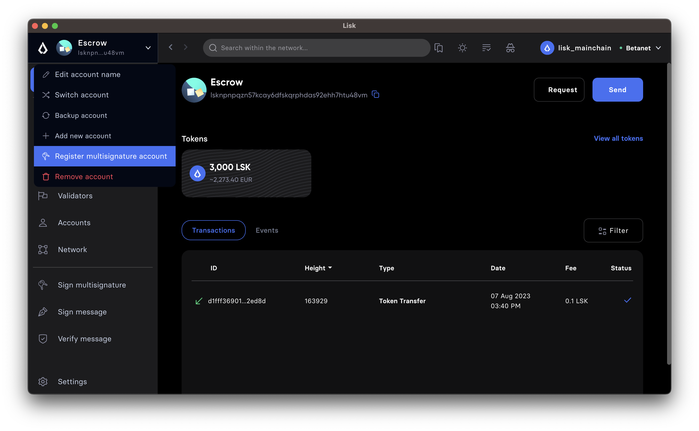
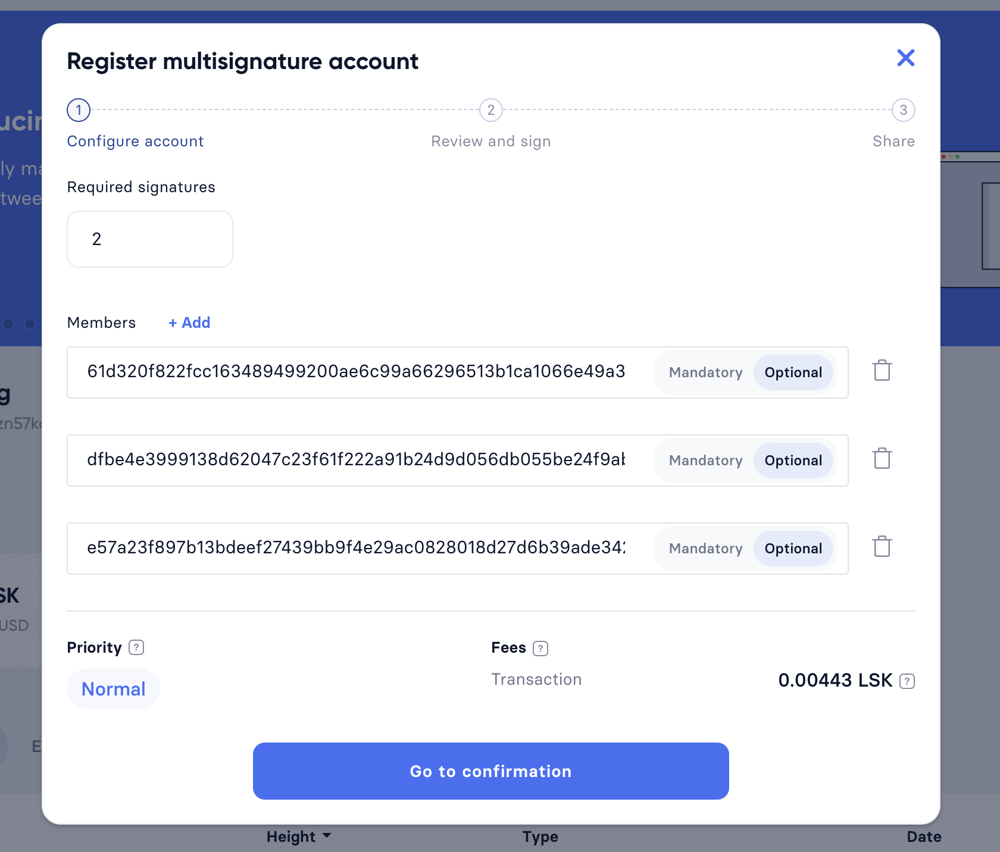
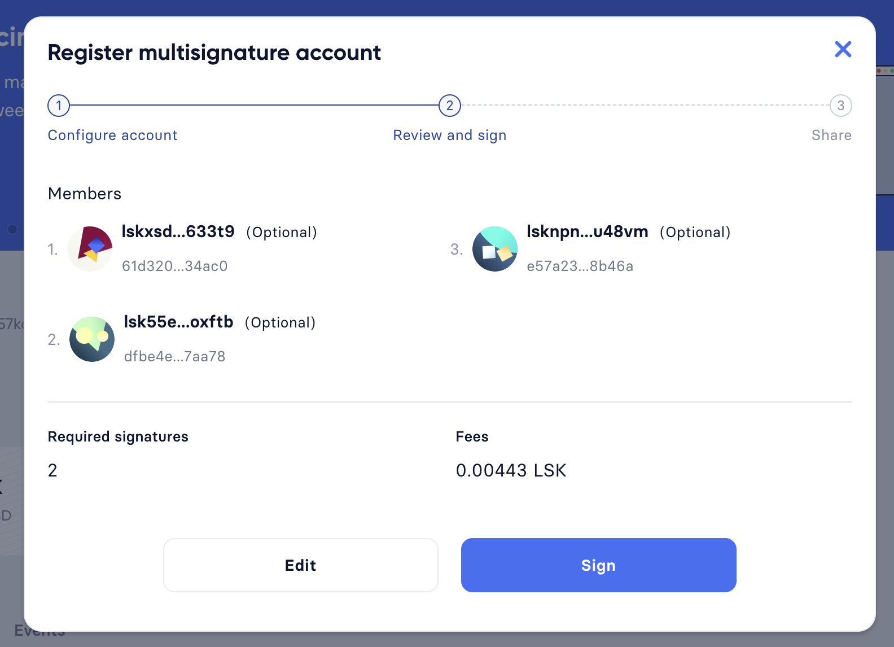
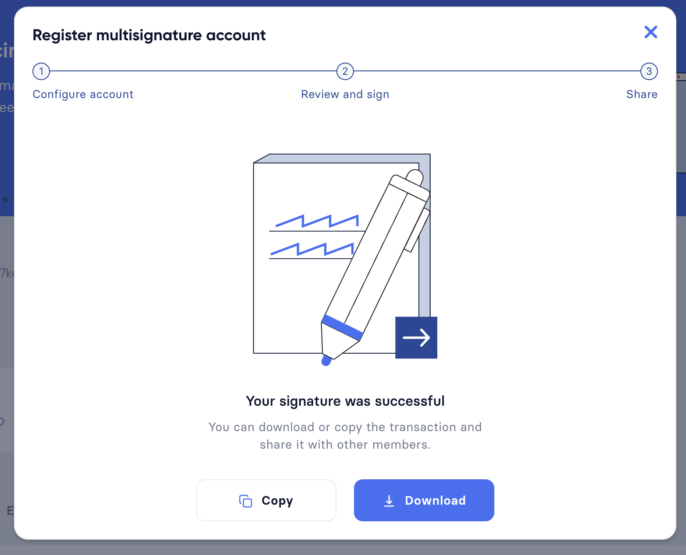
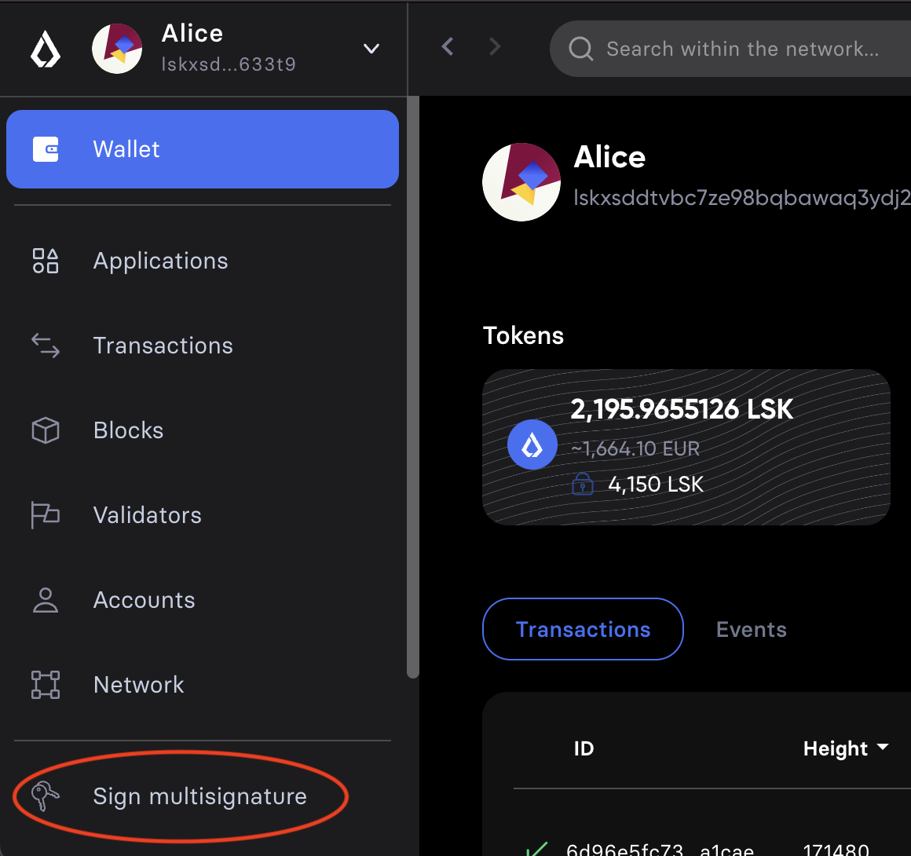
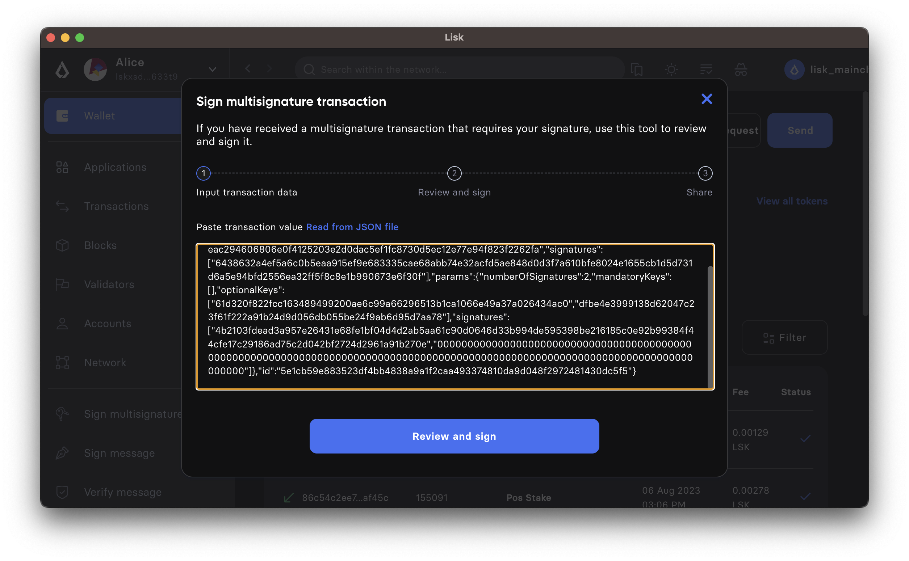
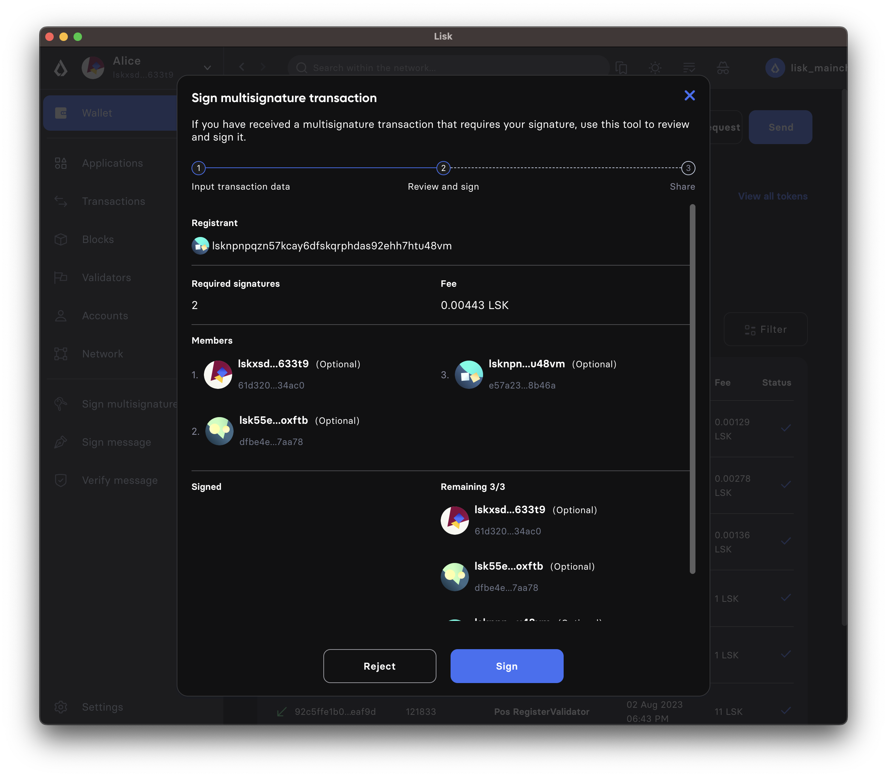
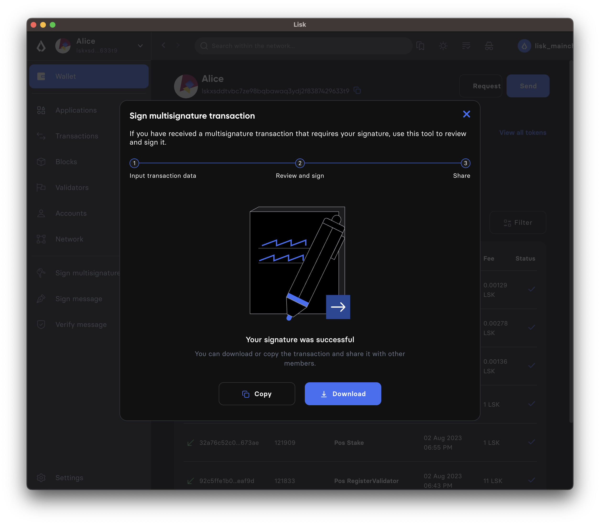

How to create multi-signature accounts and transactions
On this page, you’ll learn:
-
How to create a multi-signature user account that is managed by multiple users
-
How to create and sign multi-signature transactions
Intro
Multi-signature accounts are user accounts which are managed by a group of users.
As the name suggests, multi-signature accounts need multiple signatures of different members of the multi-signature group to send any transaction.
How many and which members exactly need to sign a transaction is defined during the registration of the multi-signature account.
| A multi-signature account can have 2-64 members. |
Use cases for multi-signature accounts
Decision Uniformity
A possible use case for multi-signature might be a family account, where family members manage the funds in the account collaboratively, or consider a corporation with four board of directors. Each board member gains access to one private key. No individual member can misuse the funds. Thus, only the decisions agreed upon by majority members can be executed.
Escrow Transactions
In case two users get into a dispute, a multi-signature account could be created to solve it.
For example, Alice makes the payment but Bob does not provide the services or goods as promised. In such a scenario, to resolve the dispute between users, a mutually trusted third party/arbiter steps in.
Considering the wallet is configured to be 2-of-3 multi-sig wallet, the third key in above case is given to the arbiter. Based on arbiter’s judgment the funds can be given either to Alice or to Bob.
Two-Factor Authentication
If John creates a multi-sig wallet that requires two keys, John creates a two factor authentication mechanism to access the funds. John can store the private keys on two different devices and the funds stored in John’s multisig wallet can be accessed only if both the keys are provided.
However, using multisig technology as two-factor authentication can be risky, especially if it is a set of 2-of-2 multisig address. If one of the keys is lost, you will not be able to access your funds. Thus, it is safer to use a 2-of-3 setup.
How to create a multi-signature account
A multi-signature account is created by sending a Register Multisignature transaction. This transaction has to be sent from the account that is supposed to be converted.
| Multisignature Registration Transactions from multisignature accounts are invalid. |
The following parameters are required to send a Register Multisignature transaction:
-
numberOfSignatures: The number of private keys that must sign a transaction. -
mandatoryKeys: An array of public keys in lexicographical order. Once the account is registered as a multi-signature account, every outgoing transaction requires a signature for every public key inmandatoryKeys. -
optionalKeys: An array of public keys in lexicographical order. Once the account is registered as a multi-signature account, every outgoing transaction requires some signatures for some public keys inoptionalKeys(the number of needed signatures depends on thenumberOfSignaturesproperty and may also be zero). -
signatures: An array of signatures, corresponding to the public keys contained inmandatoryKeysandoptionalKeys. All public keys must have a corresponding signature. The signatures corresponding tomandatoryKeysare appended first, followed by those corresponding tooptionalKeys, where the order of signatures is the same as the order of public keys in the respective array.
Considering the use case example Escrow Transactions from above, the multi-signature registration parameters would look like this:
-
numberOfSignatures: 2 -
mandatoryKeys: [] -
optionalKeys: [AliceKey, BobKey, ArbiterKey] -
signatures: [AliceSignature, BobSignature, ArbiterSignature]
Option 1: Lisk Desktop
Pick account for becoming multi-signature
Please be aware that the address of the multi-signature account is the same as the one before the multi-signature registration. Depending on the use case, you might want to turn one of your existing accounts into a multi-signature account, or to create a new account which will be used as multi-signature account.
For a step-by-step guide how to create a new account with Lisk Desktop, please refer to: https://lisk.com/learn/undefined/create-an-account
If you create a new account, don’t forget to send over sufficient tokens to send the multi-signature registration.
Converting a user account into a multi-signature account
- Click on the "Register multisignature account" button in the top left menu
-

- Define required signatures and group members
-

- Verify correct parameters and sign
-

- Share the transaction
-
 After all necessary parameters are defined, it is required that all members of the group (this includes all mandatory and all optional group members) verify the correctness of the transaction by signing it.
This is done to ensure that no account is added to a multisignature group without their consent.
The transaction to be signed is provided as JSON file or can be directly copied to clipboard.
Share the transaction off-chain with the group members as described in the next section Collecting signatures (Lisk Desktop).
{
"module":"auth",
"command":"registerMultisignature",
"nonce":"0",
"fee":"443000",
"senderPublicKey":"e57a23f897b13bdeef27439bb9f4e29ac0828018d27d6b39ade342879928b46a",
"params":{
"mandatoryKeys":[],
"optionalKeys":[
"61d320f822fcc163489499200ae6c99a66296513b1ca1066e49a37a026434ac0",
"dfbe4e3999138d62047c23f61f222a91b24d9d056db055be24f9ab6d95d7aa78",
"e57a23f897b13bdeef27439bb9f4e29ac0828018d27d6b39ade342879928b46a"
],
"numberOfSignatures":2,
"signatures":[
"00000000000000000000000000000000000000000000000000000000000000000000000000000000000000000000000000000000000000000000000000000000",
"00000000000000000000000000000000000000000000000000000000000000000000000000000000000000000000000000000000000000000000000000000000",
"00000000000000000000000000000000000000000000000000000000000000000000000000000000000000000000000000000000000000000000000000000000"
]
},
"signatures":[],
"id":""
}
The 000..0 signatures are placeholder for the pending signatures from the members of the multi-signature group.
They will be replaced automatically with the correct signatures, once the members sign the transaction.
|
Collecting signatures (Lisk Desktop)
How to create and collect the signatures from other members of the multi-sig group.
To share the generated JSON with the multi-signature registration with all group members, the JSON should be shared off-chain, e.g. by sending the JSON file to a group member via email.
|
The same transaction object should be signed by all members consecutively. Therefore, it is recommended to choose a first member of the group to share the transaction, and as soon as the member has signed the transaction, to pass the resulting JSON on to the next member. |
 When the member receives the JSON, they can use Lisk Desktop to sign the JSON like so:
After logging in to your account, click on the Sign multisignature button in the navigation.
  This will open a new window where you are able to paste the JSON you received.
On the next page, you have the opportunity to review the respective parameters for the multi-signature registration. Double-check that all values are set correctly, before signing the transaction in the next step. If you spot anything that should be changed in the transaction, or if you want to reject it entirely, simply click the Reject button and communicate your reason to the person who shared the JSON with you, if needed.
 As a result, you will receive the new JSON which has your signature appended. Now either send the JSON back to the person who shared the JSON with you, or forward it directly to one of the remaining group members, whose signature is still missing.
After Alice signed the transaction
{
"module":"auth",
"command":"registerMultisignature",
"nonce":"0",
"fee":"443000",
"senderPublicKey":"e57a23f897b13bdeef27439bb9f4e29ac0828018d27d6b39ade342879928b46a",
"params":{
"mandatoryKeys":[],
"optionalKeys":[
"61d320f822fcc163489499200ae6c99a66296513b1ca1066e49a37a026434ac0",
"dfbe4e3999138d62047c23f61f222a91b24d9d056db055be24f9ab6d95d7aa78",
"e57a23f897b13bdeef27439bb9f4e29ac0828018d27d6b39ade342879928b46a"
],
"numberOfSignatures":2,
"signatures":[
"34ce00321ddb124c37cb02074fe260bd8c13aed902f64e7b67af23a523a7ebc2b4c6710bbd8da6a43959e3424a5d405852f161241e270a0562056a8e62da7b05",
"00000000000000000000000000000000000000000000000000000000000000000000000000000000000000000000000000000000000000000000000000000000",
"00000000000000000000000000000000000000000000000000000000000000000000000000000000000000000000000000000000000000000000000000000000"
]
},
"signatures":[],
"id":""
}After Bob signed the transaction
{
"module":"auth",
"command":"registerMultisignature",
"nonce":"0",
"fee":"443000",
"senderPublicKey":"e57a23f897b13bdeef27439bb9f4e29ac0828018d27d6b39ade342879928b46a",
"params":{
"mandatoryKeys":[],
"optionalKeys":[
"61d320f822fcc163489499200ae6c99a66296513b1ca1066e49a37a026434ac0",
"dfbe4e3999138d62047c23f61f222a91b24d9d056db055be24f9ab6d95d7aa78",
"e57a23f897b13bdeef27439bb9f4e29ac0828018d27d6b39ade342879928b46a"
],
"numberOfSignatures":2,
"signatures":[
"34ce00321ddb124c37cb02074fe260bd8c13aed902f64e7b67af23a523a7ebc2b4c6710bbd8da6a43959e3424a5d405852f161241e270a0562056a8e62da7b05",
"bbf06d1edddeb097943816e5d261b9d470f252143e62226f28c17ff94db4dd7dedf8888fae3a21abcdf745645d2de6ea90938dbc9bed11556de97efe85735000",
"00000000000000000000000000000000000000000000000000000000000000000000000000000000000000000000000000000000000000000000000000000000"
]
},
"signatures":[],
"id":""
}After the arbiter signed the transaction
{
"module":"auth",
"command":"registerMultisignature",
"nonce":"0",
"fee":"443000",
"senderPublicKey":"e57a23f897b13bdeef27439bb9f4e29ac0828018d27d6b39ade342879928b46a",
"params":{
"mandatoryKeys":[],
"optionalKeys":[
"61d320f822fcc163489499200ae6c99a66296513b1ca1066e49a37a026434ac0",
"dfbe4e3999138d62047c23f61f222a91b24d9d056db055be24f9ab6d95d7aa78",
"e57a23f897b13bdeef27439bb9f4e29ac0828018d27d6b39ade342879928b46a"
],
"numberOfSignatures":2,
"signatures":[
"34ce00321ddb124c37cb02074fe260bd8c13aed902f64e7b67af23a523a7ebc2b4c6710bbd8da6a43959e3424a5d405852f161241e270a0562056a8e62da7b05",
"bbf06d1edddeb097943816e5d261b9d470f252143e62226f28c17ff94db4dd7dedf8888fae3a21abcdf745645d2de6ea90938dbc9bed11556de97efe85735000",
"f930c51abf5b4a9254e5fd0f36d1c2efd644c38835ff437117678f1fdb6d1ef55da6456f56ee1b9c83c9c4f25d2d7a3044561498c8412393e19063cf2049330e"
]
},
"signatures":[
"355727c5a2e144e714303fb3ed37113c2245b4a2e5fbb938979e747036cfdd3b618ec58ca58ffa98f0da6662ab58d1f81113950c25af9e89824b80ba16057404"
],
"id":"46335ce10e8c8b01162b9b4da0bd48ed253ab68afdcaa043487c54e115427149"
}Option 2: Node CLI
How to create a multi-signature account with the node CLI.
Multi-signature account creation(node CLI)
Create the transaction via the CLI and provide all required parameters:
lisk-core transacrion:create auth registerMultisignature 100000000 --json --prettyProvide the required parameters, when prompted for them:
? Please enter passphrase: [hidden]
? Please enter: numberOfSignatures: 2
? Please enter: mandatoryKeys(comma separated values (a,b)):
? Please enter: optionalKeys(comma separated values (a,b)): 61d320f822fcc163489499200ae6c99a66296513b1ca1066e49a37a026434ac0,dfbe4e3999138d62047c23f61f222a91b24d9d056db055be24f9ab6d95d7aa78,6290c8b58de8b71fedb7e3cb9a6ee9426aa3e7ac0141f278526375d46705b546
? Please enter: signatures(comma separated values (a,b)):When prompted for the signatures, leave it empty for now - the signatures will be added gradually, as all members of the multi-signature group need to provide their own signature for the transaction.
After providing all necessary parameters, the transaction is returned:
{
"transaction": {
"module": "auth",
"command": "registerMultisignature",
"fee": "100000000",
"nonce": "8",
"senderPublicKey": "83eac294606806e0f4125203e2d0dac5ef1fc8730d5ec12e77e94f823f2262fa",
"signatures": [
"9a2c36568b3d211d2ad3de77ce528e1fc68d42f81862d421166317f282d5e282699ca78e15f94398ffe638a90a130886c65304e362c83fe00b60402983f80c0a"
],
"params": {
"numberOfSignatures": 2,
"mandatoryKeys": [],
"optionalKeys": [
"61d320f822fcc163489499200ae6c99a66296513b1ca1066e49a37a026434ac0",
"dfbe4e3999138d62047c23f61f222a91b24d9d056db055be24f9ab6d95d7aa78",
"6290c8b58de8b71fedb7e3cb9a6ee9426aa3e7ac0141f278526375d46705b546"
],
"signatures": []
},
"id": "4e559f9b9d9e120d967be7b5bda177aaaef76b8cb7c8ab8d72e522c63dd5de91"
}
}Now log into Lisk Desktop with your account that is defined as part of the new multi-sig group.
Copy the transaction from above in JSON string format and proceed to sign the transaction object in Lisk Desktop, as explained in Collecting signatures (Lisk Desktop).
Option 3: Lisk Elements
Collecting signatures (Lisk Elements)
How to create and collect the signatures from other members of the multi-sig group.
const hexAddress = cryptography.address.getAddressFromLisk32Address("lsk55e8u4heymzmxgcrg4dc5xpgd5ckkyv53oxftb","lsk").toString("hex")
//"5aecf827b6894050fc72fa7435849fd2c74a444b"
const multisigRegMsg = {
"address": hexAddress,
"nonce": 0,
"numberOfSignatures": 2,
"mandatoryKeys": ["61d320f822fcc163489499200ae6c99a66296513b1ca1066e49a37a026434ac0","dfbe4e3999138d62047c23f61f222a91b24d9d056db055be24f9ab6d95d7aa78"],
"optionalKeys": [],
};
const tag = 'LSK_RMSG_';
const chainID = Buffer.from('02000000');
const data1 = Buffer.from(JSON.stringify(multisigRegMsg));
const privateKey1 = Buffer.from('6f118182dc728cb2da09148d865a904711805dc31973b39a90b79238d019c834dfbe4e3999138d62047c23f61f222a91b24d9d056db055be24f9ab6d95d7aa78',"hex");
cryptography.ed.signDataWithPrivateKey(tag,chainID,data1,privateKey1).toString("hex");How to create and sign a multi-signature transaction
Option 2: Node CLI
|
Preparation
The Register Multisignature command, expects the provided keys in the params to be in lexicographical order. Use the endpoint This will return the following JSON: |